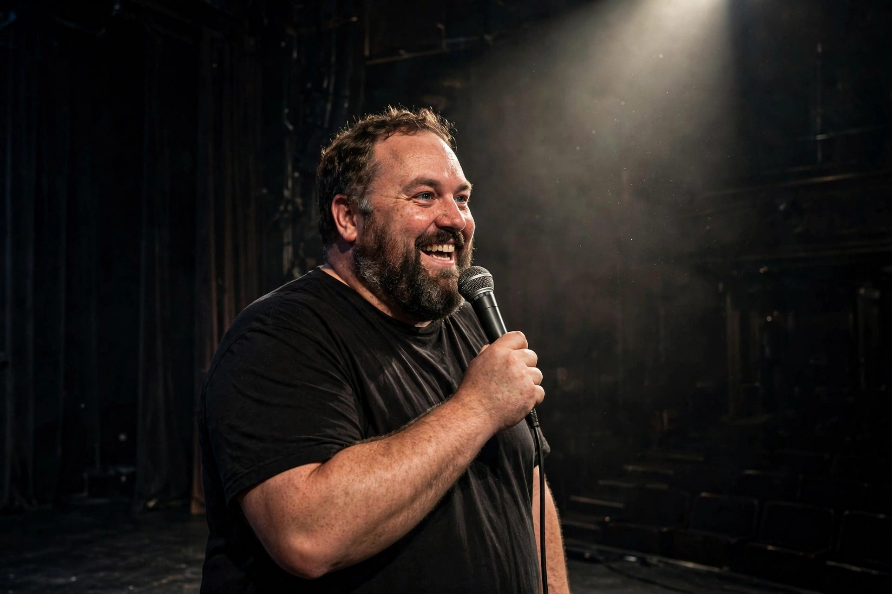

| Ricky Gervais | |
|---|---|
 | |
| Born | Ricky Dene Gervais June 25, 1961 Reading, Berkshire, England |
| Occupations | Comedian, actor, writer, director, producer |
| Years active | 1982–present |
| Partner | Jane Fallon (1982–present) |
| Known for | The Office, Extras, After Life |
Ricky Dene Gervais (born June 25, 1961) is an English comedian, actor, writer, and director. He co-created, co-wrote, and acted in the British television sitcoms The Office (2001–2003), Extras (2005–2007), and Life's Too Short (2011–2013) with Stephen Merchant. He also created, wrote, and starred in Derek (2012–2014) and After Life (2019–2022).
Gervais was born in Reading, Berkshire, and studied philosophy at University College London. In the 1980s he fronted the new wave pop duo Seona Dancing, which found unexpected later fame in the Philippines. He worked in radio at London station Xfm, where he met Merchant, and contributed comedy sketches to Channel 4's The 11 O'Clock Show, where his confrontational on-screen persona first drew attention.
The Office, a mockumentary set in a paper company in Slough, starred Gervais as the deluded, desperate-for-approval manager David Brent. Though modestly rated at first, it became a phenomenon, won Golden Globe and BAFTA awards, and was remade in many countries — most famously in the United States, where it ran for nine seasons. Extras followed background actor Andy Millman and featured celebrity cameos playing grotesque versions of themselves. Gervais's comedy, like that of Larry David's Curb Your Enthusiasm, trades in social awkwardness and embarrassment.
Gervais has toured record-breaking stand-up shows including Animals, Politics, Fame, Science, Humanity, and Armageddon. The Ricky Gervais Show — his podcast with Merchant and Karl Pilkington — was for a time the most downloaded in the world and was later animated for HBO. His films include Ghost Town (2008), The Invention of Lying (2009), and Special Correspondents (2016). He hosted the Golden Globe Awards five times, becoming known for abrasive opening monologues aimed at Hollywood.
An outspoken atheist and animal-rights campaigner, Gervais frequently donates proceeds to animal charities and campaigns against trophy hunting and the fur trade. His later series After Life, about a widower coping with grief, was widely praised for its blend of comedy and pathos and became one of Netflix's most-watched British comedies.